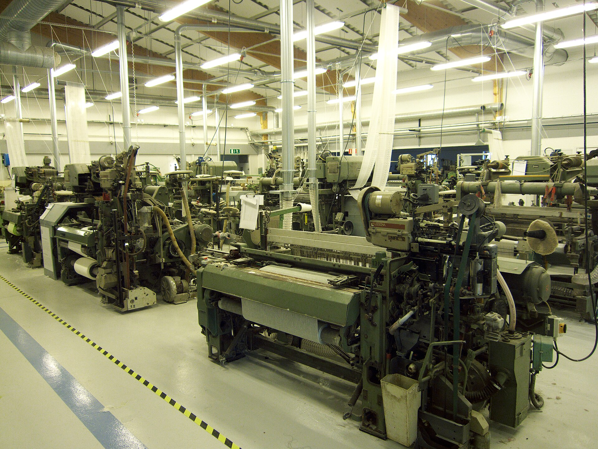

Thursday, 15 Oct 2026বৃহস্পতিবার, ১৫ অক্টোবর ২০২৬
Karnaphuli Textile Instituteকর্ণফুলী টেক্সটাইল ইনস্টিটিউট
TI-CTG-014 · Chattogram, Chattogram Divisionচট্টগ্রাম, চট্টগ্রাম বিভাগ · Principalঅধ্যক্ষ: Md. Saiful Islam
- Studentsশিক্ষার্থী812৮১২6 programmes · 18 sections৬ প্রোগ্রাম · ১৮ সেকশন
- Teachers presentউপস্থিত শিক্ষক46 / 48৪৬ / ৪৮2 on leave২ জন ছুটিতে
- Student attendance todayআজ শিক্ষার্থী উপস্থিতি72.4%৭২.৪%Below 80% threshold৮০% সীমার নিচে
- Pending approvalsঅনুমোদনের অপেক্ষায়14১৪2 overdue২টি মেয়াদোত্তীর্ণ
Attendance by class, todayক্লাসভিত্তিক আজকের হাজিরা
Marker: 80% threshold. Overall today 72.4%.চিহ্ন: ৮০% সীমা। আজ সামগ্রিক ৭২.৪%।
Requests for your decisionআপনার সিদ্ধান্তের অনুরোধ
4৪-
Course dropকোর্স ড্রপ · SR-2026-01467
Mim AkterDiploma Y2 · Sec Bডিপ্লোমা ২য় বর্ষ · সেকশন বি · 4৪ daysদিন · Overdueমেয়াদোত্তীর্ণ -
Fee waiverফি মওকুফ · SR-2026-01431
Lamia ChowdhuryDiploma Y1 · Sec Aডিপ্লোমা ১ম বর্ষ · সেকশন এ · 5৫ daysদিন · Overdueমেয়াদোত্তীর্ণ -
Casual leave · 2 daysনৈমিত্তিক ছুটি · ২ দিন · LV-2026-0212
Kamrul HasanInstructor, Spinning · balance 6ইন্সট্রাক্টর, স্পিনিং · অবশিষ্ট ৬ · 1১ daysদিন -
Testimonialপ্রশংসাপত্র · SR-2026-01482
Rafiul AlamDiploma Y4 · Sec Aডিপ্লোমা ৪র্থ বর্ষ · সেকশন এ · 1১ daysদিন
Pending with other officesঅন্য দপ্তরে অপেক্ষমাণ
- Procurement: 6 sewing machines (৳ 4.8 lakh)ক্রয়: ৬টি সেলাই মেশিন (৳ ৪.৮ লাখ)Waiting for District Adminজেলা অ্যাডমিনের অপেক্ষায় · 3 days৩ দিন
- Student migration: Tanvir Ahmed → Dhakaশিক্ষার্থী স্থানান্তর: তানভীর আহমেদ → ঢাকাWaiting for Ministryমন্ত্রণালয়ের অপেক্ষায় · 6 days৬ দিন
Noticesনোটিশ
- Annual asset verification: institutions must submit by 31 Octoberবার্ষিক সম্পদ যাচাই: ৩১ অক্টোবরের মধ্যে প্রতিষ্ঠানগুলোকে জমা দিতে হবে
- Teacher training on the live attendance system — schedule by divisionলাইভ হাজিরা সিস্টেমে শিক্ষক প্রশিক্ষণ — বিভাগভিত্তিক সময়সূচি
- Durga Puja holidays: all institutions closed 19–22 Octoberদুর্গাপূজার ছুটি: ১৯–২২ অক্টোবর সকল প্রতিষ্ঠান বন্ধ থাকবে